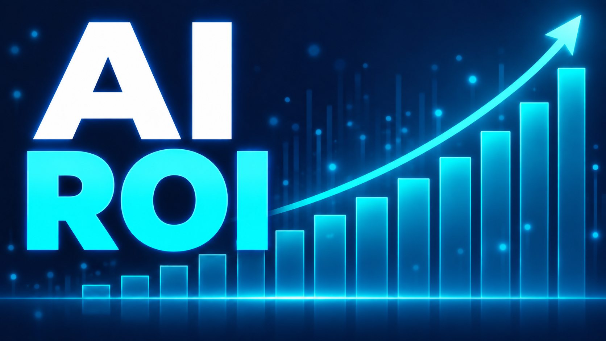

I led six AI design pilots; four teams reached a working prototype in one week. My five-day sprint compressed discovery from about three months to one week, with quality, team readiness, and post-launch value guiding how I assess ROI.
View case study